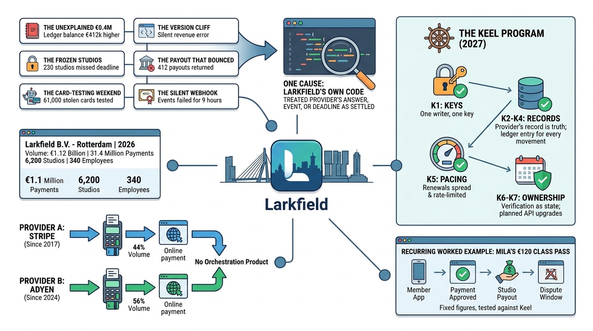

Preface
Meet Larkfield
AI-assisted: researched and written with Claude Code; illustrations generated with Gemini. How this works

Image generated by Google Gemini (gemini-3-pro-image-preview)
Preface
AI-assisted: researched and written with Claude Code; illustrations generated with Gemini. How this works

Image generated by Google Gemini (gemini-3-pro-image-preview)